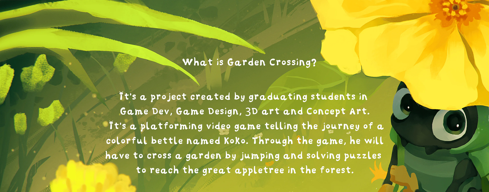
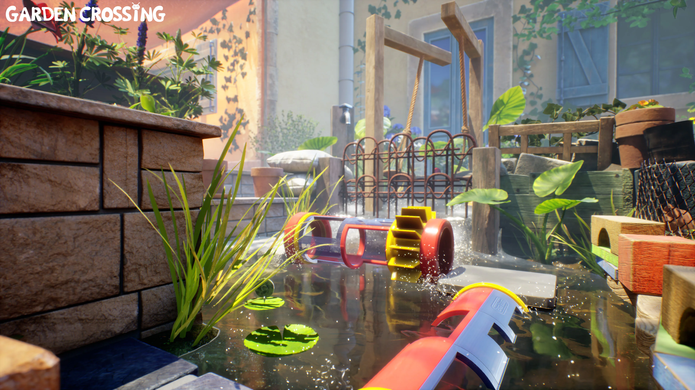
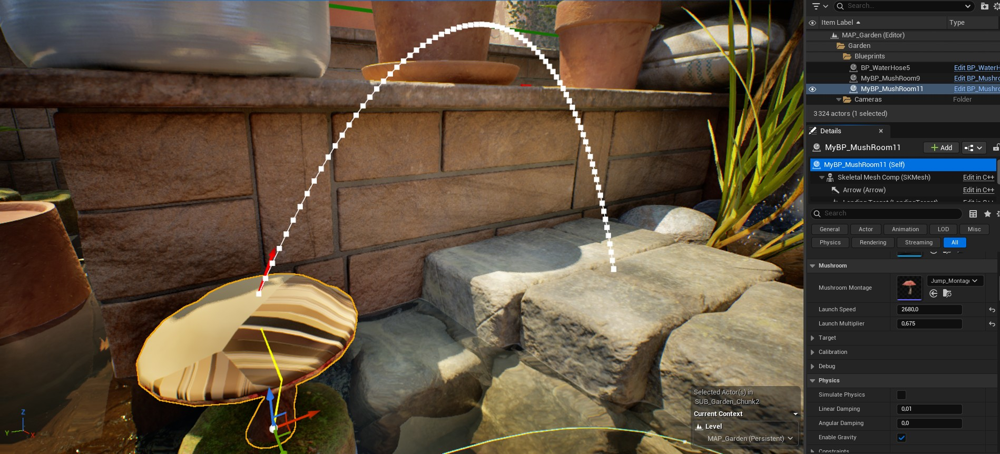
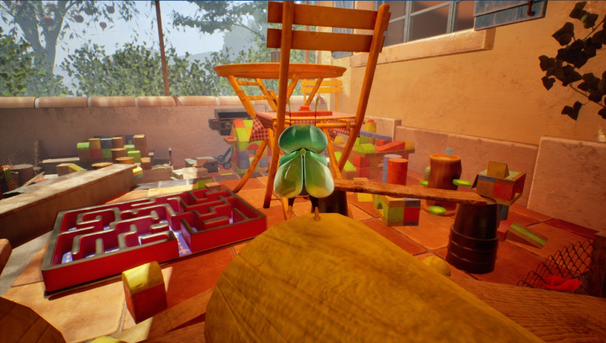
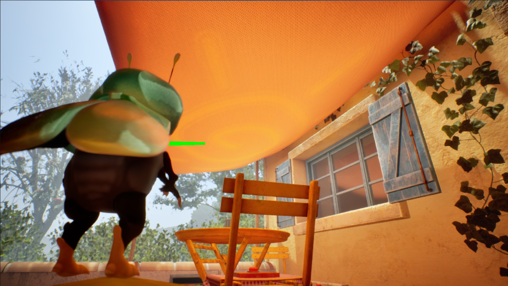

My Role
My role involved developing gameplay mechanics for the player character and the environment, while also creating simple, user-friendly tools to support game designers and the art team in their workflow.
Development of a glider system, one of the game's key gameplay mechanics.
Development of a mushroom obstacle, one of the most common challenges encountered by the player. This mushroom functions as a bumper. Designers simply place a target to define the player's destination, then adjust two variables to control the jump height and duration. This makes the tool intuitive, flexible, and precise for level design.

I also developed the entire camera system to provide greater control over the player experience and create a more immersive feel. It included dynamic wall-based camera offsets and a fully functional fixed-camera system for different cinematic viewpoints. While the fixed-camera feature was ultimately cut from the final game, it was fully implemented as part of the camera framework.
 
Unreal Engine 5
This project was a very enriching experience, providing me with a lot of knowledge in game development, but also a better understanding of the different aspects that make up a game, such as sound design, balancing, and the importance of polish. I particularly enjoyed the process of iteration and continuous improvement, which allows a simple mechanic to become an element that contributes to the game's identity and overall coherence.
Technologies
C++
Blueprint
Perforce